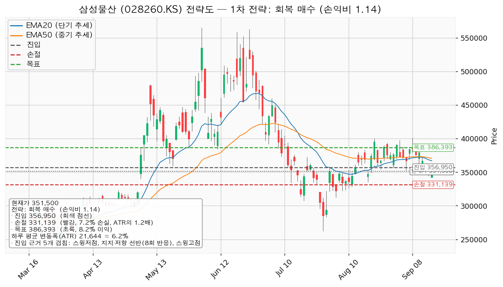
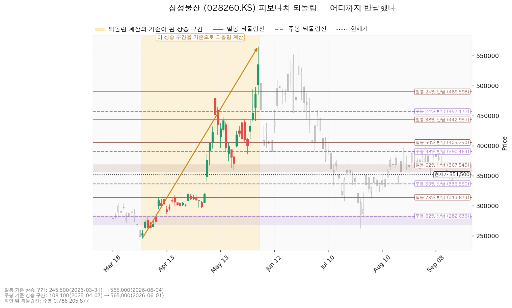
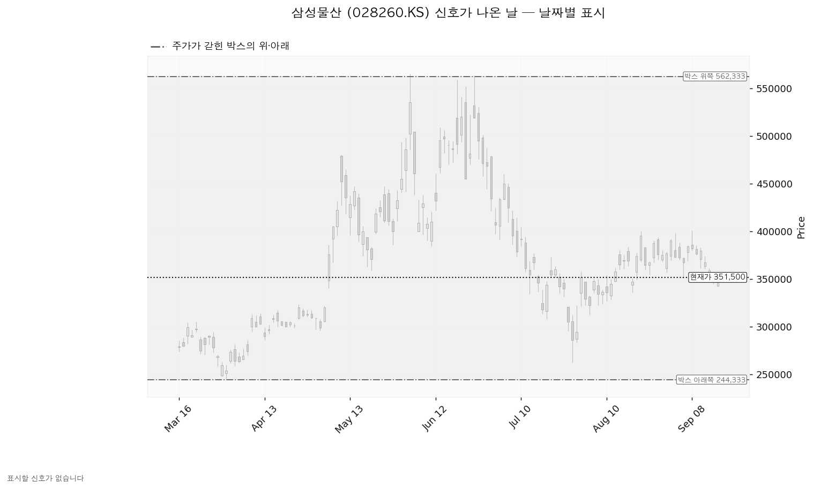
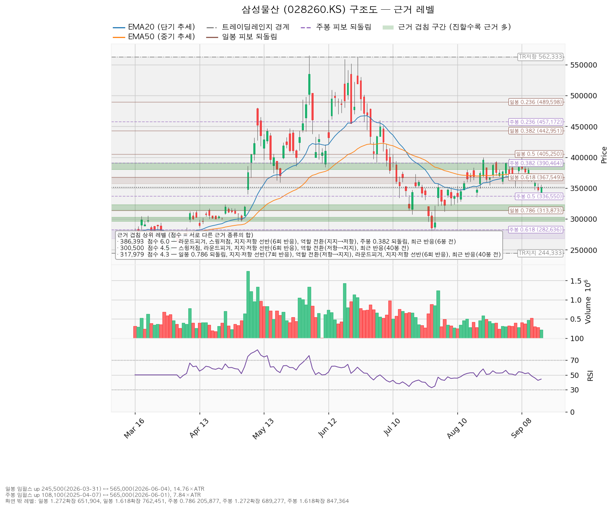

삼성물산(028260.KS)은 건설·상사·패션·리조트 사업을 운영하고 삼성전자 등 계열사 지분을 보유한 한국 기업입니다.
| 구분 | 가격 | 판정 방식 | 현재가 대비 | 상태 |
|---|---|---|---|---|
| 회복선(진입 조건) | 356,950원 | 일봉 종가로 회복한 뒤 되돌림에서 지지되는지 — 이번 계획의 진입 자리와 같은 가격입니다 | +1.55% (0.25 ATR) | 회복 대기 |
| 집행 손절 | 331,139원 | 장중 도달 시 즉시 청산 — 356,950원에 진입한 경우에만 유효하며, 미진입 상태에서는 아무 의미가 없습니다 | -5.79% (0.94 ATR) | 미진입 |
| 관망 종료 기준 | 336,550원 | 일봉 종가가 아래로 마감 / 또는 2026-10-27 실적 | -4.25% (0.69 ATR) | 유지 중 |
| 확인선 | 386,393원 | 일봉 종가 돌파 후 되돌림에서 지지 확인 | +9.93% (1.61 ATR) | 미돌파 |
| 폐기선(구조) | 244,333원 | 이탈 → 3거래일 내 회복 실패 → 반등이 저항으로 확인 | -30.49% (4.95 ATR) | 유지 중 — 실무상 작동하지 않음 |
폐기선까지의 거리는 하루 평균 변동폭의 4.95배로 3배를 넘습니다. 가격 기준 무효화로 쓸 수 없으므로 미진입 상태에서 실제로 볼 선은 관망 종료 기준 336,550원이고, 논지 쪽 무효화는 2026-10-27 실적 조건으로 따로 겁니다.
| 항목 | 값 |
|---|---|
| 보유 수량 | 3주 (최초 매수 2026-07-01) |
| 평단 | 486,166원 |
| 평가액 | 1,054,500원 |
| 평가손익 | -403,998원 (-27.70%) |
이 3주는 이번 셋업과 무관한 기존 포지션이며, 집행 손절 331,139원은 356,950원 회복 진입분에만 적용합니다. 기존 보유분은 아래 세 시나리오의 행동 규칙을 따릅니다.
| 가격 | 3주 기준 손익 | 평단 대비 |
|---|---|---|
| 셋업 목표 386,393원 | -299,319원 | -20.52% |
| 셋업 진입 356,950원 | -387,648원 | -26.58% |
| 현재가 351,500원 | -403,998원 | -27.70% |
이번 목표 386,393원에 닿아도 기존 3주는 평단 대비 손실 구간입니다. 목표까지의 상승분이 평단 회복에 미치지 못하므로, 이 3주의 처분 판단은 이번 셋업이 아니라 아래 시나리오와 논지 무효화 조건으로 내립니다.
이 종목의 첫 리포트이며, 발행 기록에 같은 종목의 과거 리포트가 없어 대조할 직전 좌표가 없습니다.
| 항목 | 값 |
|---|---|
| 현재가 | 351,500원 |
| EMA20 (최근 20일 평균 흐름) | 366,837원 — 현재가는 -4.18% 아래 (0.71 ATR) |
| EMA50 (최근 50일 평균 흐름) | 370,666원 — 현재가는 -5.17% 아래 (0.89 ATR) |
| RSI(14) (0~100, 최근 상승·하락 강도) | 44.29 |
| ATR (하루 평균 변동폭) | 21,644원 = 주가의 6.16% |
| 국면 | 횡보 레인지(구조 유지 — 하단 사수 조건부) |
| 6월 4일 고점 565,000원 대비 | -37.79% |
현재가는 두 이동평균 모두 아래에 있고, EMA20까지는 하루 평균 변동폭의 0.71배, EMA50까지는 0.89배입니다. 두 이평이 356,950~370,666원 구간에 몰려 있어 회복선 위쪽 바로 다음 저항대가 됩니다.
어느 구간을 보고 박스로 판정했는가. 조회된 일봉은 727개이며, 40·90·180봉 세 창을 모두 시험해 최근 180봉(약 아홉 달)을 골랐습니다. 이 창에서 종가가 박스 안에 머문 비율은 97.2%(90봉 97.8%, 40봉 92.5%)이고, 90봉 창은 구간 초반 대비 후반 종가 이동분이 박스 폭의 28.8%로 나와 횡보가 아닌 추세로 판정돼 후보에서 빠졌습니다. 선택된 180봉 박스는 244,333~562,333원이며 폭이 하루 평균 변동폭의 14.69배입니다. 이 폭은 실행 기준으로 쓰기에 지나치게 넓으므로, 이 리포트의 진입·손절·목표는 박스 경계가 아니라 근거 겹침 구간에서 고릅니다.
박스 안쪽에서 무슨 일이 있었나. 가격은 직전 113,633~244,333원 구간에서 위로 올라와 이 박스로 진입했습니다. 아래에서 올라온 박스이므로 다시 모으는 국면(재축적)과 내다 파는 국면(분산)이 같은 모양을 그리고, 안쪽에서 일어난 일로 갈라야 합니다.
박스 안쪽 판정이 매집 우위인데도 지지 확인 매수 셋업은 산출되지 않았습니다. 그 셋업은 현재가가 여러 번 지켜진 지지 선반 위에 있을 때만 성립하는데, 8회 반응한 선반 352,500~359,000원의 아래쪽에 현재가 351,500원이 놓여 있기 때문입니다. 같은 자리를 종가로 되찾는 것이 이번 계획의 진입 조건입니다.
셋업은 하나만 산출되었습니다.
| 셋업 | 진입 | 손절 | 목표 | 손익비 (손절 폭) | 구조 증명도 | 엣지의 종류 | 판정 |
|---|---|---|---|---|---|---|---|
| reclaim_long (회복 매수) | 356,950원 | 331,139원 | 386,393원 | 1:1.14 (1.19 ATR) | 회복 확인형(1.0, 최고 등급) | 모멘텀 — "저항을 종가로 되찾으면 그 방향이 이어진다" | 이번 계획 |

대표 셋업 선정 사유는 *"손익비 1.14 × 구조 증명도(회복 확인형) × 근거 겹침 3.5점으로 선정. 저항을 종가로 회복한 뒤에만 진입한다 — 진입가는 불리하나 구조가 먼저 증명된다"* 입니다. 후보가 하나뿐이라 손익비 1등과 대표 셋업 사이의 트레이드오프는 이번에 발생하지 않았습니다. 되돌림 매수와 돌파 매수가 함께 나오지 않은 것은 국면이 하락·중립이어서 눌림을 먼저 잡는 방식이 배제되고, 위쪽 386,393원 돌파는 아직 회복선조차 되찾지 못한 상태라 후보가 되지 않았기 때문입니다.
| 회복 매수 상세 | 값 |
|---|---|
| 진입 근거 겹침 | 3.5점 / 352,500~360,000원 — 스윙저점, 8회 반응한 지지·저항 선반, 스윙고점, 라운드피겨 360,000원. 8거래일 전 실제 반응이 나온 자리라는 가산이 붙습니다 |
| 손절 근거 | 근거 겹침 구간(336,550~340,000원, 2.6점 — 주봉 50% 되돌림, 라운드피겨, 20거래일 전 반응) 바로 아래. 구간 안쪽이 아니라 그 아래로 밀어낸 값이라 손익비가 그만큼 낮게 잡혀 있습니다 |
| 목표 근거 겹침 | 6.0점 / 380,000~390,464원 — 라운드피겨, 스윙저점, 6회 반응 선반, 역할 전환(지지→저항), 주봉 38% 되돌림, 6거래일 전 반응. 이 종목에서 가장 두꺼운 자리입니다 |
| 손절 폭 | 25,811원 = 진입가의 -7.23%, 하루 평균 변동폭의 1.19배 |
| 진입~목표 거리 | 29,443원 = 하루 평균 변동폭의 1.36배 |
손절 폭과 손익비를 함께 봅니다. 손절 331,139원은 아래쪽 겹침 구간 바로 밑에 놓은 구조적 손절 그 자체이며, 하루 변동폭 안쪽으로 조인 값이 아닙니다(1.19배). 이번 산출에는 구조적 손절 기준의 별도 손익비가 따로 나오지 않았습니다 — 집행 손절과 구조적 손절이 같은 가격이기 때문입니다. 손익비 1.14는 손절을 좁혀서 만든 값이 아닙니다. 1을 조금 넘는 수준이며, 위험 25,811원에 대해 기대 이익이 29,443원이라는 뜻입니다.
이 셋업 유형의 성격. 엔진이 붙인 설명은 *"자주 틀리고 소수가 크게 맞는 유형"* 이며, 모멘텀형 회복 매수의 일반적 성격을 말한 것이지 이 엔진에서 측정한 수치가 아닙니다. 백테스트가 없으므로 승률에 숫자를 붙이지 않습니다. 진입 근거는 모멘텀이지만 집행은 레인지 규칙을 따릅니다 — 손절은 구조 아래에 두고 목표 386,393원에서 전량 청산하며 트레일링은 걸지 않습니다. 목표를 일봉 종가로 넘어서는 구간은 이 포지션의 연장이 아니라 새 셋업으로 다시 잡습니다.
청산은 목표에서 전량입니다. 진입에서 목표까지가 하루 평균 변동폭의 1.36배로 2배에 못 미치므로 트레일링이나 단계별 청산을 권하지 않습니다(이 2배는 관행적 기준이지 정설은 아닙니다). 참고로 분할 청산안도 함께 산출됐습니다 — 1차 368,351원에서 50% 익절(그 구간 손익비 0.44) → 잔여분 손절을 진입가 356,950원(본전)으로 이동 → 2차 386,393원에서 나머지 50% 청산(손익비 1.14)이며, 전 구간 손익비는 0.79, 1차 익절 후 본전 손절에 걸릴 때의 하한 손익비는 0.22입니다. 전 구간 손익비가 1을 밑돌기 때문에도 이번 집행 계획에는 쓰지 않습니다.
비중. 1회 매매에서 계좌의 1%를 잃는 것을 한도로 하면 손절 폭 7.23%에서 계좌의 13.8%를 실어야 하지만, 한 종목에 계좌의 13%를 넘기지 않는 규칙에 따라 13%로 제한합니다. 13% 비중에서 손절에 닿으면 계좌 손실은 -0.94%입니다. 주당 위험은 25,811원이며, 계좌 총액이 시스템에 등록돼 있지 않아 금액이 아닌 계좌 대비 비율로 적습니다. 기존 3주(평가액 1,054,500원)가 이미 이 종목에 실려 있으므로, 13% 한도는 기존 보유분을 포함해 계산하십시오.
도구 적합성. 하루 평균 변동폭이 주가의 6.16%로 8% 기준 아래이고, 손절 폭 7.23%는 하루 평균 변동폭의 1.19배입니다. 하루치 움직임보다 넓은 손절이므로 하루 흔들림만으로 체결될 자리는 아닙니다. 시계는 수 주 기준입니다.
셋업 무효화 기준선은 진입가와 같은 356,950원입니다(위 폐기선 244,333원과는 다른 가격이며 섞어 쓰지 않습니다).
| 단계 | 트리거 | 의미 | 행동 |
|---|---|---|---|
| ① 관찰 | 일봉 종가가 356,950원 아래로 마감 | 구조 이탈 시작 — 되돌아 올라오면 속임수 하락일 수 있어 아직 무효가 아닙니다 | 신규 진입만 중단. 집행 손절은 그대로 둡니다 |
| ② 경고 | 이탈 후 3거래일 안에 356,950원을 종가로 회복하지 못함, 또는 그 전에 일봉 종가가 335,306원 아래로 마감(하루 평균 변동폭의 1배만큼 더 밀림) — 둘 중 먼저 오는 쪽 | 저항 회복 실패 가능성이 우세해짐 | 잔여 비중 축소. 반등이 나오면 이 가격에서의 반응을 확인합니다 |
| ③ 무효 | 반등이 356,950원에서 막히고 그 아래로 되밀림(지지가 저항으로 전환) | 셋업 폐기 — 구조 해석이 틀린 것으로 확정 | 포지션 정리. 새 구조가 만들어질 때까지 관망 |
가격을 한 번 내준 것은 1단계일 뿐입니다. 집행 손절 331,139원은 이 판정과 무관하게 별도로 작동하며, 장중 일시 이탈은 어느 단계에도 해당하지 않습니다.
| 시나리오 | 조건 | 구조 해석 | 행동 |
|---|---|---|---|
| 상승 전환 | 356,950원 종가 회복 후 지지 → 386,393원 종가 돌파 | 속임수 하락 확인 → 강세 신호 → 되돌림 지지 → 상승 국면 | 356,950원 회복·지지 확인 후 계좌의 13% 한도로 진입하고, 386,393원 종가 돌파 시에는 새 셋업으로 다시 잡습니다. 기존 3주는 그대로 둡니다 |
| 횡보 지속 | 244,333원을 지키며 386,393원 아래에서 박스 유지 | 구조는 유지 — 매물 소화에 시간이 필요한 국면이며 부정적 신호가 아닙니다 | 356,950원 종가 회복 전까지 신규 진입을 보류하고 기존 3주는 보유 유지합니다. 박스 안쪽 세 가지를 추적합니다: 지지 테스트마다 매도 거래량이 줄어드는지(현재 감소), 저점이 절상되는지(현재 절상), 상승할 때 거래량이 실리는지(현재 상승봉 대 하락봉 거래량비 1.09) |
| 시나리오 폐기 | 244,333원 이탈 후 3거래일 내 회복 실패(또는 그 전에 종가 222,689원 아래 마감) + 반등에서 저항으로 확인 | 매집이 아니라 재분산 — 추가 저점 갱신 가능성을 엽니다 | 기존 3주를 포함해 포지션 정리 후, 새 매도 절정과 새 박스가 만들어질 때까지 관망. 다만 이 조건은 현재가에서 하루 평균 변동폭의 4.95배 아래라 실제로는 아래 `논지 무효화`가 먼저 작동합니다 |
일봉 기준 상승 구간은 2026-03-31 245,500원 → 2026-06-04 565,000원(하루 평균 변동폭의 14.76배)이며, 현재가 351,500원은 그 상승분의 66.8%를 반납한 자리입니다. 62% 되돌림 367,549원과 79% 되돌림 313,873원 사이에 있습니다. 주봉 기준 상승 구간은 2025-04-07 108,100원 → 2026-06-01 565,000원이며, 현재가는 그 상승분의 46.7% 반납 지점으로 38% 되돌림 390,464원과 50% 되돌림 336,550원 사이입니다. 일봉·주봉 되돌림 모두 계산할 수 있는 상승 구간이 있어 이번 리포트에는 둘 다 실었습니다.
| 되돌림선 | 가격 | 현재가 대비 | 이번 리포트에서의 쓰임 |
|---|---|---|---|
| 일봉 24% | 489,598원 | +39.29% | 없음 |
| 주봉 24% | 457,172원 | +30.06% | 없음 |
| 일봉 38% | 442,951원 | +26.02% | 없음 |
| 일봉 50% | 405,250원 | +15.29% | 위쪽 3.3점 구간(400,000~405,250원)의 구성 근거 |
| 주봉 38% | 390,464원 | +11.09% | 목표·확인선 구간의 위쪽 경계 |
| 일봉 62% | 367,549원 | +4.57% | EMA20·EMA50과 겹치는 2.5점 구간의 구성 근거(분할안 1차 목표 자리) |
| 주봉 50% | 336,550원 | -4.25% | 관망 종료 기준 / 집행 손절을 밀어낸 구간의 상단 근거 |
| 일봉 79% | 313,873원 | -10.70% | 아래쪽 4.3점 구간의 구성 근거 |
| 주봉 62% | 282,636원 | -19.59% | 아래쪽 3.7점 구간의 구성 근거 |
| 주봉 79% | 205,877원 | -41.43% | 없음 |

이번 산출에서 Wyckoff 신호가 난 날은 없습니다. 속임수 하락(spring)·속임수 상승(upthrust)·강세 신호(SOS)·약세 신호(SOW) 어느 것도 잡히지 않았습니다. 아래 차트에 표시된 날이 없는 것은 조회 실패가 아니라 해당 기간에 신호일이 없었기 때문입니다. 국면 후보는 매집으로 나왔지만 이는 박스 모양과 안쪽 거래량·저점 흐름으로 매긴 후보이며, 날짜가 붙은 개별 신호로 뒷받침된 것은 아닙니다.

점수는 서로 다른 근거 종류의 가중치 합이며, 같은 종류가 여러 개 겹쳐도 한 번만 더해집니다.
| 가격대 | 대표값 | 점수 | 근거 | 현재가 대비 |
|---|---|---|---|---|
| 562,333~565,000원 | 563,444원 | 2.4 | 박스 위쪽, 스윙고점 2회(6월 4일 565,000원·6월 25일 563,000원) | +60.30% |
| 489,598원 | 489,598원 | 1.0 | 일봉 24% 되돌림 | +39.29% |
| 457,172원 | 457,172원 | 1.5 | 주봉 24% 되돌림 | +30.06% |
| 442,951원 | 442,951원 | 1.0 | 일봉 38% 되돌림 | +26.02% |
| 400,000~405,250원 | 401,563원 | 3.3 | 스윙고점 2회(8월 21일 400,000원·9월 8일 401,000원), 라운드피겨, 일봉 50% 되돌림, 6봉 전 반응 | +14.24% |
| 380,000~390,464원 | 386,393원 | 6.0 | 라운드피겨, 스윙저점, 6회 반응 선반, 역할 전환(지지→저항), 주봉 38% 되돌림, 6봉 전 반응 | +9.93% |
| 366,837~370,666원 | 368,351원 | 2.5 | EMA20, 일봉 62% 되돌림, EMA50, 12봉 전 반응 | +4.79% |
| 352,500~360,000원 | 356,950원 | 3.5 | 스윙저점, 8회 반응 선반, 스윙고점, 라운드피겨, 8봉 전 반응 | +1.55% |
| 336,550~340,000원 | 338,275원 | 2.6 | 주봉 50% 되돌림, 라운드피겨, 20봉 전 반응 | -3.76% |
| 313,873~323,000원 | 317,979원 | 4.3 | 일봉 79% 되돌림, 7회 반응 선반, 역할 전환(저항→지지), 라운드피겨, 6회 반응 선반, 40봉 전 반응 | -9.54% |
| 296,000~303,000원 | 300,500원 | 4.5 | 스윙저점, 라운드피겨, 6회 반응 선반, 역할 전환(저항→지지), 40봉 전 반응 | -14.51% |
| 275,500~282,636원 | 277,879원 | 3.7 | 6회 반응 선반, 역할 전환(저항→지지), 주봉 62% 되돌림 | -20.94% |
| 262,000원 | 262,000원 | 1.7 | 스윙저점(7월 29일), 34봉 전 반응 | -25.46% |
| 244,333원 | 244,333원 | 1.2 | 박스 아래쪽 | -30.49% |
| 205,877원 | 205,877원 | 1.5 | 주봉 79% 되돌림 | -41.43% |
현재가 위아래로 가장 가까운 자리는 위쪽 356,950원(3.5점, +1.55%)과 아래쪽 338,275원(2.6점, -3.76%)이며, 두 대표값 사이 거리는 하루 평균 변동폭의 0.86배입니다. 현재가는 그 사이에 끼어 있고, 위쪽 자리가 더 두껍습니다. 관망 종료 기준 336,550원 아래에서 다음으로 받칠 자리는 313,873~323,000원(4.3점)이며, 그 아래 296,000~303,000원(4.5점)이 이 종목에서 하단 쪽으로 가장 두꺼운 구간입니다. 위쪽으로 386,393원을 넘어서면 다음 저항은 400,000~405,250원(3.3점)입니다.

| 항목 | 값 |
|---|---|
| 애널리스트 수 / 투자의견 | 17명 / 적극 매수 |
| 목표주가 평균 | 501,176원 (+42.58%) |
| 목표주가 최저 | 360,000원 (+2.42%) |
| 목표주가 최고 | 665,000원 (+89.19%) |
| 선행 PER (주가 ÷ 앞으로의 주당순이익) | 19.41배 (내년 추정 EPS 18,109원 기준) |
| 후행 PER (주가 ÷ 지나간 주당순이익) | 조회되지 않았습니다 |
| 올해 추정 EPS (주당순이익) | 16,585원 (성장률 +10.9%) |
| 내년 추정 EPS | 18,109원 (성장률 +9.19%) |
| 90일간 추정치 변화 | 올해 +1.0%, 내년 +0.2% (둘 다 소폭 상향) |
(a) 배수. 후행 배수는 이번 조회에 담기지 않았으므로 후행 기준으로 비싸다·싸다를 판정하지 않습니다. 선행 배수는 19.41배이며, 올해 이익이 +10.9%, 내년이 +9.19% 늘어나는 것을 전제로 한 값입니다. 올해 추정 EPS 기준으로 환산하면 21.19배입니다. 두 배수의 차이는 1.8배 수준으로 벌어진 폭이 크지 않습니다 — 이익이 급증하는 구간이 아니라 한 자릿수 후반 성장을 전제한 배수라는 뜻입니다.
(b) 목표주가 분포. 현재가 351,500원은 애널리스트 17명의 최저 목표 360,000원보다도 아래에 있습니다. 17명 전원의 목표가 현재가 위에 있다는 뜻이며, 최저~최고 구간(360,000~665,000원) 전체가 현재가 밖에 놓입니다. 평균 목표까지는 +42.58%이지만 분포 폭이 1.8배에 이르므로 평균 하나로 판단하지 않습니다.
(c) 하락의 성격. 6월 4일 고점 565,000원에서 -37.79% 내려오는 동안, 컨센서스 EPS는 90일간 올해분 +1.0%, 내년분 +0.2% 상향됐습니다. 상향 폭은 작지만 방향은 위입니다. 추정치가 내려가지 않은 채 가격이 빠졌으므로 이번 하락은 배수 수축이며, 사업 악화로 적을 근거는 이 자료에 없습니다.
(d) 현금흐름. 2025-12-31 결산 기준 영업현금흐름 3.02조원 흑자, 잉여현금흐름 1.12조원 흑자이며 적자가 아닙니다. 설비투자는 1.79조원에서 1.91조원으로 +6.2% 늘었고 증가 폭이 크지 않습니다. 영업 단계에서 현금이 나가는 적자와도, 설비투자가 앞서 잉여현금흐름이 적자로 돌아선 경우와도 다릅니다. 세 수치가 서로 어긋난다는 표시는 없었습니다.
(e) 상승 여력의 분해. 현재 배수는 올해 추정 EPS 기준 21.19배입니다. 평균 목표 501,176원은 내년 추정 EPS 18,109원에 27.68배를 매긴 값입니다. 이익 증가만 반영하면(현재 배수 21.19배를 내년 EPS에 그대로 적용) 383,810원이 되어 +9.19%가 설명되고, 평균 목표까지의 나머지 +30.58%는 배수가 21.19배에서 27.68배로 더 매겨져야 채워집니다. 평균 목표의 상승분은 대부분 배수 확장에 기대고 있습니다.
주도주 여부. 섹터는 주도 쪽, 종목은 아직 아닙니다. 한국 섹터 강도에서 건설 ETF(117700.KS)의 20일 초과수익은 +4.92%로 11개 섹터 중 1위이며(5일 +2.98%, 1일 -3.72%), 삼성물산의 매출 비중이 가장 큰 건설 부문이 여기에 해당합니다. 다만 상사·패션·리조트와 계열사 지분이 함께 있어 이 섹터 하나로 대표되지는 않습니다. 종목 자체는 고점에서 -37.79% 되돌린 뒤 이동평균 두 개 아래에 있고 회복선도 되찾지 못한 상태라 주도주로 판정하지 않습니다. 컨센서스는 12개월 시계이고 이번 셋업은 수 주 시계이므로 두 결론이 갈려도 모순이 아니며, 답은 진입·손절·목표로 냅니다.
| 날짜 | 이벤트 | 볼 수치 |
|---|---|---|
| 2026-10-27 | 3분기 실적 발표 | 올해 추정 EPS 16,585원 경로 유지 여부, 내년 추정 18,109원의 방향, 영업현금흐름(직전 결산 3.02조원)과 설비투자(1.91조원, +6.2%)의 흐름 |
이번 조회에서 날짜가 확정된 이벤트는 실적일 하나뿐이며, 다른 일정은 나오지 않았습니다.
폐기선 244,333원은 현재가에서 하루 평균 변동폭의 4.95배 아래로 3배를 넘습니다. 가격 기준 무효화로는 작동하지 않으므로, 판단을 접는 조건을 실적 수치로 따로 겁니다 — 2026-10-27 실적에서 다음 중 하나가 확인되면 "추정치는 유지되는데 가격만 빠진 배수 수축"이라는 해석을 접습니다.
가격 쪽에서 실제로 볼 선은 관망 종료 기준 336,550원(일봉 종가)이며, 그 아래로 마감하면 이번 회복 매수 계획을 접고 313,873~323,000원 구간에서의 반응을 다시 봅니다.